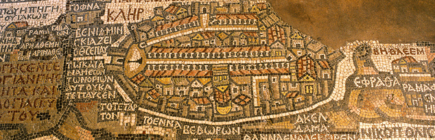
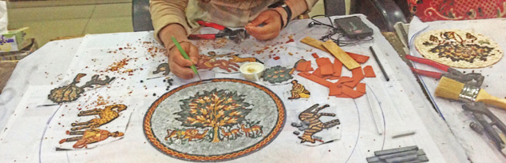

Madaba

Just 30km from Amman, along the 5,000-year-old Kings´ Highway, is one of the most memorable places in the Holy Land. After passing through a string of ancient sites, the first city you reach is Madaba, known as the “City of Mosaics."
Best known for its spectacular Byzantine and Umayyad mosaics, Madaba is home to the famous 6th century Mosaic Map of Jerusalem and the Holy Land. With two million pieces of vividly coloured local stone, it depicts hills and valleys, villages and towns as far as the Nile Delta.

The Madaba Mosaic Map covers the floor of the Greek Orthodox Church of St. George, which is located northwest of the city centre. The church was built in 1896 AD, over the remains of a much earlier 6th century Byzantine church. The mosaic panel enclosing the Map was originally around 15.6 X 6m, 94 sq.m., only about a quarter of which is preserved.
Other mosaic masterpieces found in the Church of the Virgin and the Apostles and in the Archaeological Museum depict a rampant profusion of flowers and plants, birds and fish, animals and exotic beasts, as well as scenes from mythology and the everyday pursuits of hunting, fishing and farming. Literally, hundreds of other mosaics from the 5th through the 7th centuries are scattered throughout Madaba's churches and homes.
In line with Jordan's commitment to restoring and preserving its mosaic masterpieces, Madaba’s extensive Archaeological Park and Museum complex encompasses the remains of several Byzantine churches, including the outstanding mosaics of the Church of the Virgin and the Hyppolytus Hall, part of a 6th century mansion.

Close to the Church of the Virgin is the Madaba Institute for Mosaic Art and Restoration, which operates under the patronage of the Ministry of Tourism. The only project of its kind in the Middle East, the Institute trains artisans in the art of making, repairing and restoring mosaics.